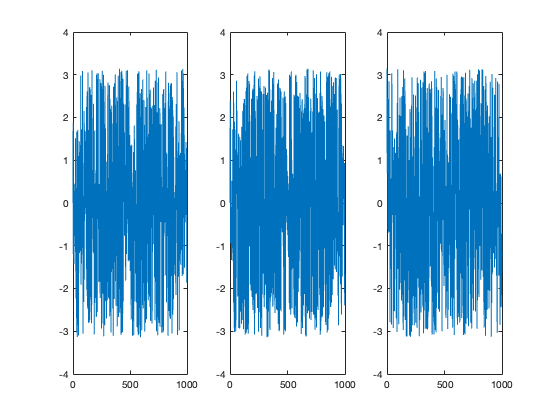
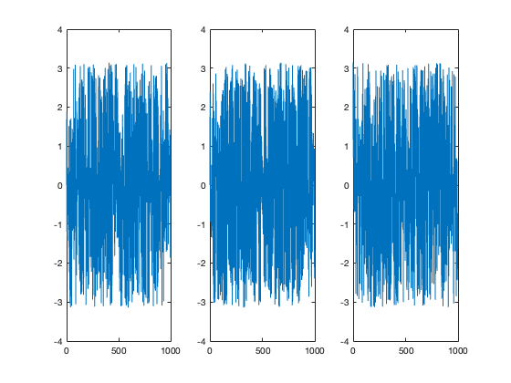
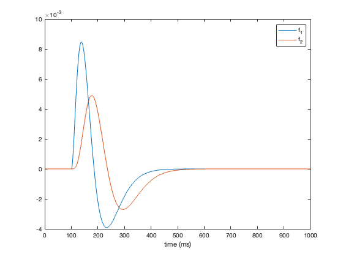
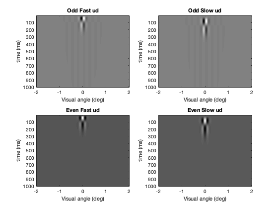
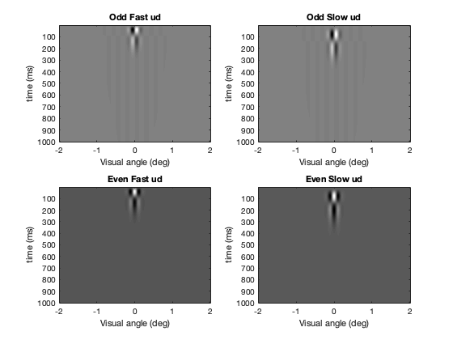
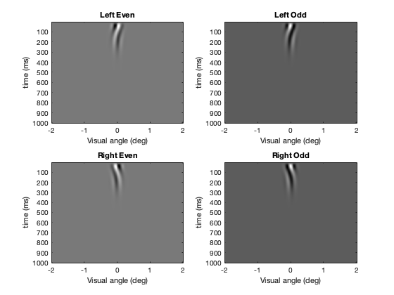
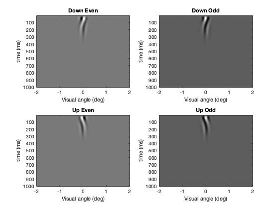
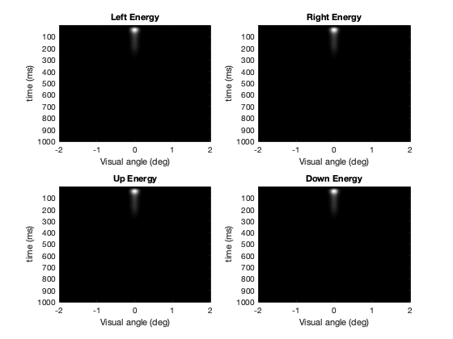

Contents
clear; close all; clc;
1)
deltaT = 1; % ms duration = 1000; % ms t = 0:deltaT:duration-deltaT; x = zeros(size(t)); x(100) = 1; tau = 25; % ms y1 = output(x, t, deltaT, tau); fig1 = figure(); plot(t, y1, 'ro-'); xlabel('Time (ms)') ylabel('Output')

a)
Impulse response
deltaT = 1; % ms duration = 1000; % ms t = 0:deltaT:duration-deltaT; x = zeros(size(t)); x(100) = 1; taus = [25, 50, 10]; % ms fig2 = figure(); for ll = 1:length(taus) tau = taus(ll); y1 = output(x, t, deltaT, tau); subplot(1, 3, ll) plot(t, y1, 'r-'); hold on; t_new = t-100; exponential = exp(-(t_new./tau)); plot(exponential, 'b'); xlabel('Time (ms)') ylabel('Output') ylim([0, max(y1)]) end

b)
Step response
deltaT = 1; % ms duration = 1000; % ms t = 0:deltaT:duration-deltaT; x = zeros(size(t)); x(100:1000) = 1; taus = [25, 50, 10]; % ms fig3 = figure(); for ll = 1:length(taus) tau = taus(ll); y1 = output(x, t, deltaT, tau); subplot(1, 3, ll) plot(t, y1, 'ro', 'DisplayName', 'step resp'); hold on; t_new = t-100; exponential = 1 - exp(-(t_new./tau)); plot(exponential, 'b', 'LineWidth', 2, 'DisplayName', '1 - exp'); xlabel('Time (ms)') ylabel('Output') ylim([0, max(y1)]) legend('Location', 'southeast') end

c)
Sinusoidal response
deltaT = 1; % ms duration = 1000; % ms t = 0:deltaT:duration-deltaT; %x = sin(2*pi*t); freqs = [2, 4, 8]/1000; % ms tau = 25; impulse = zeros(size(t)); impulse(1) = 1; d = output(impulse, t, deltaT, tau); amp_y = zeros(length(freqs), length(t)); phase_y = zeros(length(freqs), length(t)); % amp_check_y = zeros(length(freqs), length(t)); % phase_check_y = zeros(length(freqs), length(t)); fig4 = figure(); for ll = 1:length(freqs) f = freqs(ll); x = sin(2*pi*f*t); y1 = output(x, t, deltaT, tau); subplot(1, 3, ll) plot(t, y1, 'r-', 'DisplayName', 'step resp'); hold on; xlabel('Time (ms)') ylabel('Output') %ylim([0, max(y1)]) legend('Location', 'southeast') x_fft = fft(x)'; d_fft = fft(d); h_fft = 1./(1 + tau .* d_fft); y_fft = h_fft .* x_fft; amp_y(ll, :) = abs(y_fft); phase_y(ll, :) = angle(y_fft); % amp_check_y(ll, :) = abs(x_fft)./(1 + 2 * pi * f); % phase_check_y(ll, :) = angle(x_fft) + pi/2; % figure(); % plot(amp_y); % figure(); % plot(phase_y); end fig5 = figure(); for ll = 1:length(freqs) subplot(1, 3, ll) plot(t, amp_y(ll, :)) end fig6 = figure(); for ll = 1:length(freqs) subplot(1, 3, ll) plot(t, phase_y(ll, :)) end

 
 2)
deltaT = 1; % ms duration = 1000; % ms t = 0:deltaT:duration-deltaT; x = zeros(size(t)); x(100) = 1; tau = 25; % ms [f1, f2] = lp_filter(x, t, deltaT, tau); fig7 = figure(); plot(t, f1, 'DisplayName', 'f_1') hold on; plot(t, f2, 'DisplayName', 'f_2') xlabel('time (ms)') legend()
3 a)
deltaX = 1/120; x_x = -2:deltaX:2; x_y = -2:deltaX:2; t = 0:deltaT:duration-deltaT; x = zeros(length(x_x), length(x_y), length(t)); x(241, 241, 1) = 1; % Impulse line tau = 25; [f1, f2] = space_time_filter(x, t, deltaT, tau); sig = 0.1; sf = 4; [evenFilt, oddFilt] = gabor_filter(x_x, sig, sf); [oddFastlr, oddSlowlr, evenFastlr, evenSlowlr] = ... sum_diff(f1, f2, oddFilt, evenFilt); fig8 = figure(); plot_func(oddFastlr, oddSlowlr, evenFastlr, evenSlowlr, 'Odd Fast lr', 'Odd Slow lr', ... 'Even Fast lr', 'Even Slow lr', 'lr') [oddFastud, oddSlowud, evenFastud, evenSlowud] = ... sum_diff(f1, f2, oddFilt', evenFilt'); fig9 = figure(); plot_func(oddFastud, oddSlowud, evenFastud, evenSlowud, 'Odd Fast ud', 'Odd Slow ud', ... 'Even Fast ud', 'Even Slow ud', 'ud')
 
 b)
[leftEven, leftOdd, rightEven, rightOdd, leftEnergy, rightEnergy] = ... motion_energy(oddFastlr, oddSlowlr, evenFastlr, evenSlowlr); [upEven, upOdd, downEven, downOdd, upEnergy, downEnergy] = ... motion_energy(oddFastud, oddSlowud, evenFastud, evenSlowud); fig10 = figure(); plot_func(leftEven, leftOdd, rightEven, rightOdd, 'Left Even', 'Left Odd', ... 'Right Even', 'Right Odd', 'lr') fig11 = figure(); plot_func(upEven, upOdd, downEven, downOdd, 'Up Even', 'Up Odd', ... 'Down Even', 'Down Odd', 'ud') 
c)
fig12 = figure(); plot_func(leftEnergy, rightEnergy, upEnergy, downEnergy, 'Left Energy', ... 'Right Energy', 'Up Energy', 'Down Energy', 'energy')
d)
dir_amps = [0, pi/2]; % for left-right, and up-down phase_shifts = [4, -4]; % positive is left or down, negative is right or up % for dir_amp = dir_amps % for phase_shift = phase_shifts amp_sinusoid = 1; phase = 0; phase_shift = 2*pi/125; sinusoid_x = zeros(length(x_x), length(x_y), length(t)); sf = 30; for tt = 1:1000 phase = phase + 2*pi/125;%blah_blah; sinusoid_x(:, :, tt) = get_grating(x_x, 1, phase, sf, 'lr'); end deltaX = 1/120; x_x = -2:deltaX:2; deltaT = 1; % ms duration = 1000; % ms t = 0:deltaT:duration-deltaT; tau = 25; % ms [f1, f2] = space_time_filter(sinusoid_x, t, deltaT, tau); [oddFastlr, oddSlowlr, evenFastlr, evenSlowlr] = ... sum_diff(f1, f2, oddFilt, evenFilt); [oddFastud, oddSlowud, evenFastud, evenSlowud] = ... sum_diff(f1, f2, oddFilt', evenFilt'); [leftEven, leftOdd, rightEven, rightOdd, leftEnergy, rightEnergy] = ... motion_energy(oddFastlr, oddSlowlr, evenFastlr, evenSlowlr); [downEven, downOdd, upEven, upOdd, downEnergy, upEnergy] = ... motion_energy(oddFastud, oddSlowud, evenFastud, evenSlowud);
figure(); pp = 241; plot(t, squeeze(leftEnergy(pp, pp, :)), 'DisplayName', 'leftEnergy'); hold on; plot(t, squeeze(leftEven(pp, pp, :)), 'DisplayName', 'leftEven'); plot(t, squeeze(leftOdd(pp, pp, :)), 'DisplayName', 'leftOdd'); legend() %title([num2str(blah_blah), ' ', num2str(per_freq)]) % figure(); % imagesc(sinusoid_x(:, :, 1)); % colormap(gray) % figure(); % imagesc(sinusoid_x(:, :, 100)); % colormap(gray) %hold on; %plot(res(:, 10), 'r');
4)
[leftEnergyNorm, rightEnergyNorm, upEnergyNorm, downEnergyNorm] = ...
energy_norm(leftEnergy, rightEnergy, upEnergy, downEnergy);
Unrecognized function or variable 'stdev'.
Error in direction_selectivity_assignment>energy_norm (line 337)
leftEnergyNorm = leftEnergy ./ (sumEnergy + stdev^2);
Error in direction_selectivity_assignment (line 248)
energy_norm(leftEnergy, rightEnergy, upEnergy, downEnergy);
Functions
function y1 = output(x, t, deltaT, tau) y1 = zeros(length(t), 1); for tt = 1:length(t) - 1 deltaY1 = (deltaT/tau) * (-y1(tt) + x(tt)); y1(tt + 1) = y1(tt) + deltaY1; end end function [f1, f2] = lp_filter(x, t, deltaT, tau) y = zeros(length(t), 7); for tt = 1:length(t) - 1 for jj = 1:7 if jj == 1 deltaY = (deltaT / tau) * (-y(tt, jj) + x(tt)); y(tt + 1, jj) = y(tt, jj) + deltaY; else deltaY = (deltaT / tau) * (-y(tt, jj) + y(tt, jj - 1)); y(tt + 1, jj) = y(tt, jj) + deltaY; end end end f1 = y(:, 3) - y(:, 5); f2 = y(:, 5) - y(:, 7); end function [f1, f2] = space_time_filter(x, t, deltaT, tau) [x_size, y_size, t_length] = size(x); y = zeros(x_size, y_size, t_length, 7); f1 = zeros(x_size, y_size, t_length); f2 = zeros(x_size, y_size, t_length); for tt = 1:t_length - 1 for jj = 1:7 if jj == 1 deltaY = (deltaT / tau) * (-y(:, :, tt, jj) + x(:, :, tt)); y(:, :, tt + 1, jj) = y(:, :, tt, jj) + deltaY; else deltaY = (deltaT / tau) * (-y(:, :, tt, jj) + y(:, :, tt, jj - 1)); y(:, :, tt + 1, jj) = y(:, :, tt, jj) + deltaY; end end f1(:, :, tt) = y(:, :, tt, 3) - y(:, :, tt, 5); f2(:, :, tt) = y(:, :, tt, 5) - y(:, :, tt, 7); end end function [evenFilt, oddFilt] = gabor_filter(x, sig, sf) evenFilt = exp(-(x.^2)./(2*sig^2)) .* cos(2*pi*sf*x); oddFilt = exp(-(x.^2)./(2*sig^2)) .* sin(2*pi*sf*x); integral = sum(evenFilt.^2 + oddFilt.^2); evenFilt = evenFilt / integral; oddFilt = oddFilt / integral; end function [oddFast, oddSlow, evenFast, evenSlow] = ... sum_diff(f1, f2, oddFilt, evenFilt) [lx, ly, lt] = size(f1); oddFast = zeros(lx, ly, lt); oddSlow = zeros(lx, ly, lt); evenSlow = zeros(lx, ly, lt); evenFast = zeros(lx, ly, lt); for tt = 1:lt oddFast(:, :, tt) = conv2(f1(:, :, tt), oddFilt, 'same'); oddSlow(:, :, tt) = conv2(f2(:, :, tt), oddFilt, 'same'); evenSlow(:, :, tt) = conv2(f2(:, :, tt), evenFilt, 'same'); evenFast(:, :, tt) = conv2(f1(:, :, tt), evenFilt, 'same'); end end function [Even1, Odd1, Even2, Odd2, Energy1, Energy2]... = motion_energy(oddFast, oddSlow, evenFast, evenSlow) Even1 = oddFast + evenSlow; Odd1 = -oddSlow + evenFast; Even2 = -oddFast + evenSlow; Odd2 = oddSlow + evenFast; Energy1 = Even1.^2 + Odd1.^2; Energy2 = Even2.^2. + Odd2.^2; end function [leftEnergyNorm, rightEnergyNorm, upEnergyNorm, downEnergyNorm] = ... energy_norm(leftEnergy, rightEnergy, upEnergy, downEnergy) sumEnergy = leftEnergy + rightEnergy + upEnergy + downEnergy; leftEnergyNorm = leftEnergy ./ (sumEnergy + stdev^2); rightEnergyNorm = rightEnergy ./ (sumEnergy + stdev^2); upEnergyNorm = upEnergy ./ (sumEnergy + stdev^2); downEnergyNorm = downEnergy ./ (sumEnergy + stdev^2); end function plot_func(a, b, c, d, a_title, b_title, c_title, d_title, direc) if strcmp(direc, 'lr') a = squeeze(a(241, :, :))'; b = squeeze(b(241, :, :))'; c = squeeze(c(241, :, :))'; d = squeeze(d(241, :, :))'; elseif strcmp(direc, 'ud') a = squeeze(a(:, 241, :))'; b = squeeze(b(:, 241, :))'; c = squeeze(c(:, 241, :))'; d = squeeze(d(:, 241, :))'; elseif strcmp(direc, 'energy') a = squeeze(a(241, :, :))'; b = squeeze(b(241, :, :))'; c = squeeze(c(:, 241, :))'; d = squeeze(d(:, 241, :))'; end subplot(2,2,1) imagesc(a) colormap(gray) xticks([1, 121, 241, 361, 481]) xticklabels([-2, -1, 0, 1, 2]) yticks(0:100:1000) xlabel('Visual angle (deg)') ylabel('time (ms)') title(a_title) subplot(2,2,2) imagesc(b) colormap(gray) xticks([1, 121, 241, 361, 481]) xticklabels([-2, -1, 0, 1, 2]) yticks(0:100:1000) xlabel('Visual angle (deg)') ylabel('time (ms)') title(b_title) subplot(2,2,3) imagesc(c) colormap(gray) xticks([1, 121, 241, 361, 481]) xticklabels([-2, -1, 0, 1, 2]) yticks(0:100:1000) xlabel('Visual angle (deg)') ylabel('time (ms)') title(c_title) subplot(2,2,4) imagesc(d) colormap(gray) xticks([1, 121, 241, 361, 481]) xticklabels([-2, -1, 0, 1, 2]) yticks(0:100:1000) xlabel('Visual angle (deg)') ylabel('time (ms)') title(d_title) end function sinewave2D = get_grating(x_x, amp, phase, sf, ori) %n = 101; [X,Y] = meshgrid(x_x .* sf); if strcmp(ori, 'lr') sinewave2D = sin(amp * X + phase); elseif strcmp(ori, 'ud') sinewave2D = sin(amp * Y + phase); end % figure(1) % imagesc(sinewave2D) % axis equal;axis off;colormap(gray); end % function space_time_filter(x, t, deltaT, tau) % n = [3,5,5,7]; % for tt = 1:size(x,1) % % Temporal filters % deltaY = (deltaT/tau) * (- y(1,:) + input(tt,:)); % y(1,:) = y(1,:) + deltaY; % for nn = 2:max(n) % deltaY = (deltaT/tau) * (-y(nn,:) + y(nn-1,:)); % y(nn,:) = y(nn,:) + deltaY; end % rtFast = y(n(1),:)-y(n(2),:); % rtSlow = y(n(3),:)-y(n(4),:); % % Spatial filters % oddFast = spatialConvolution(rtFast,oddFilt); % oddSlow = spatialConvolution(rtSlow,oddFilt); % evenSlow = spatialConvolution(rtSlow,evenFilt); % evenFast = spatialConvolution(rtFast,evenFilt); % % Direction selective filters and motion energy % leftEven = oddFast + evenSlow; % leftOdd = -oddSlow + evenFast; % leftEnergy = leftEven.^2 + leftOdd.^2; rightEven = -oddFast + evenSlow; % rightOdd = oddSlow + evenFast; % rightEnergy = rightEven.^2. + rightOdd.^2; % end % end